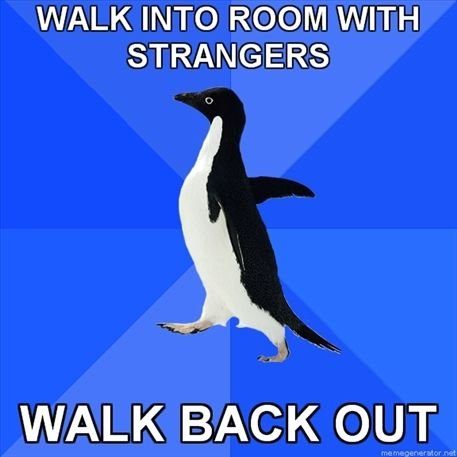

Face Your Fears
What: Web Developer
Me, on a personal level
- Social anxiety and generalised anxiety disorder
- CBT (Cognitive behavioral therapy)
- Medication

Me, as a developer
- Impostor Syndrome: "The impostor syndrome, sometimes called impostor phenomenon or fraud syndrome, is a psychological phenomenon in which people are unable to internalize their accomplishments. Despite external evidence of their competence, those with the syndrome remain convinced that they are frauds and do not deserve the success they have achieved. Proof of success is dismissed as luck, timing, or as a result of deceiving others into thinking they are more intelligent and competent than they believe themselves to be."
- Constantly overwhelmed by the talent of others
Why am I telling you this?
Because, I'm here
The important thing is to know how to control your fear
- What was the situation: Public speaking
- What did you think would happen?: Panic attack, forget to breathe, slides won't work, people will laugh, I'll spontaneously combust
- What really happened?: It went absolutely fine
This is something we can all apply
Do it
- Give that talk
- Publish that blog post
- Upload those photos
- Open-source that code
- Make that video
- Hell, dance in the street
Just do it, whilst you can
Support each other
- Don't laugh at those you know are trying their best
- Don't mock something, offer constructive criticism. Or say nothing at all.
- Stick up for what you know to be right. Morals do still mean something
Other people are constantly facing their fears in ways you might not even know, help one another
At the end of the day...
- Negativity won't get you anywhere
- Lack of self-confidence certainly won't
- Fear definitely won't
Embrace it, face it and make yourself proud. You can face your fears